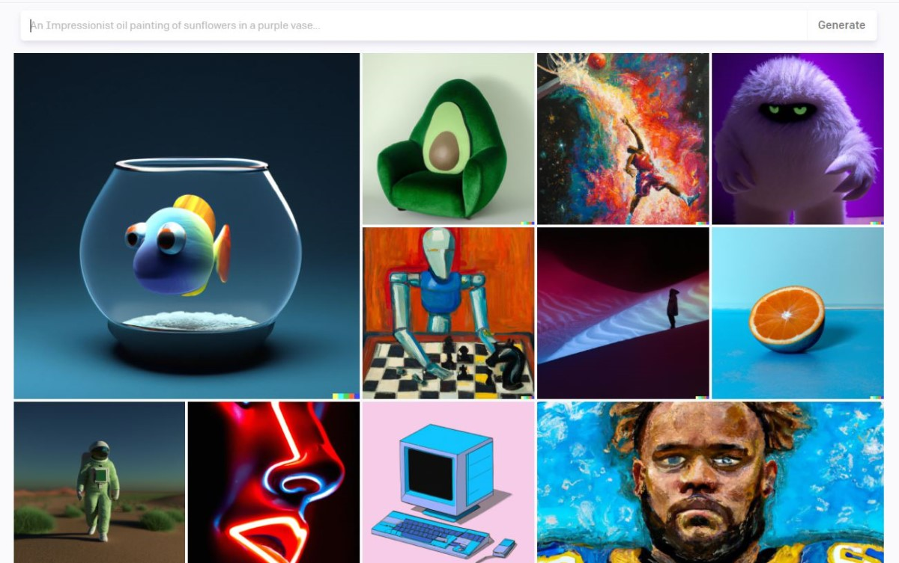
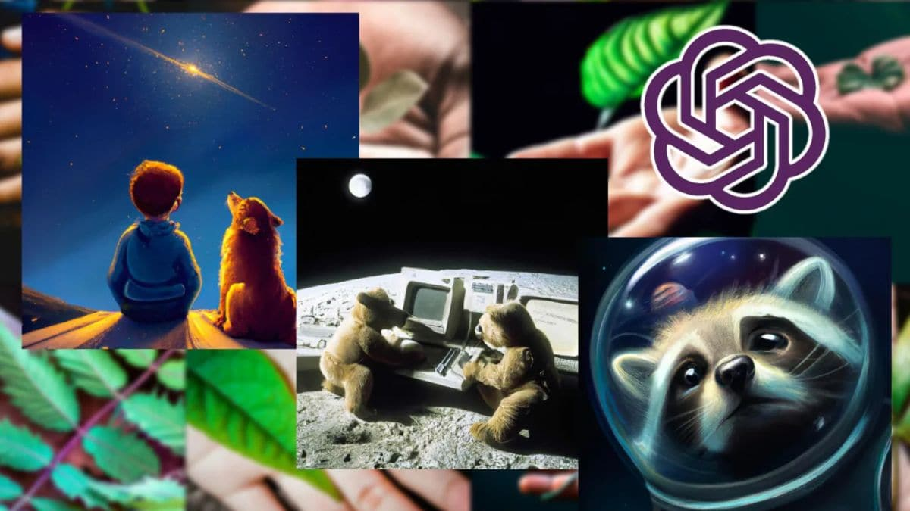

DALL-E 2
1. Đặc trưng nổi bật
DALL-E 2 là một sản phẩm của OpenAI, phần mềm này nổi bật với khả năng biến đổi văn bản thành hình ảnh cực kỳ chi tiết và sáng tạo. Ngoài ra, nó còn có tính năng “Inpainting” cho phép chỉnh sửa các chi tiết trong hình ảnh như thêm hoặc loại bỏ các vật thể một cách mượt mà. Điều này giúp các nhà thiết kế tạo ra các sản phẩm chính xác theo từng yêu cầu.
2. Ưu điểm
- Hình ảnh đầu ra sắc nét, độ phân giải cao và nhiều tùy chọn phong cách từ hiện thực đến trừu tượng.
- Cung cấp khả năng mở rộng hình ảnh để tạo thêm các phần mới dựa trên các yếu tố trong ảnh gốc.
- Đối tượng phù hợp: nhà thiết kế quảng cáo, hoặc các dự án đòi hỏi sự sáng tạo và độc đáo trong thiết kế hình ảnh.
3. Nhược điểm
- Người dùng phải bỏ ra mức chi phí cao nếu muốn sử dụng đầy đủ tính năng.
- Yêu cầu mô tả chi tiết ý tưởng bằng ngôn ngữ chính xác và cụ thể để AI hiểu đúng và tạo ra hình ảnh mong muốn.
4. Chi phí theo gói sử dụng
- Miễn phí: Cung cấp một số lượng tín dụng ban đầu miễn phí hàng tháng cho người dùng mới.
- Trả phí: Sau khi hết tín dụng miễn phí, người dùng có thể mua thêm với giá khoảng $15 cho 115 tín dụng (mỗi hình ảnh thường mất từ 1 đến 4 tín dụng tuỳ thuộc vào độ phức tạp và độ phân giải).